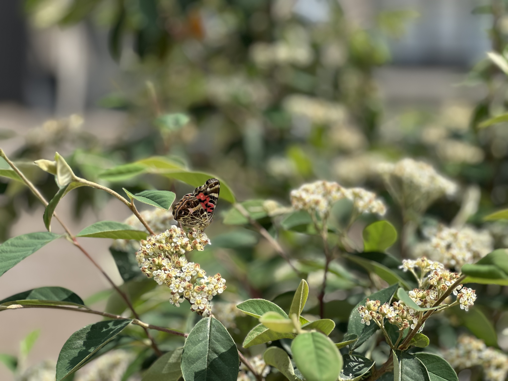
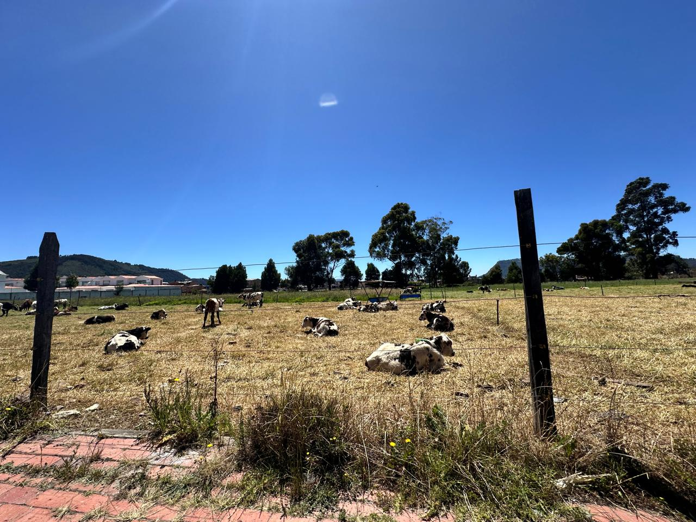
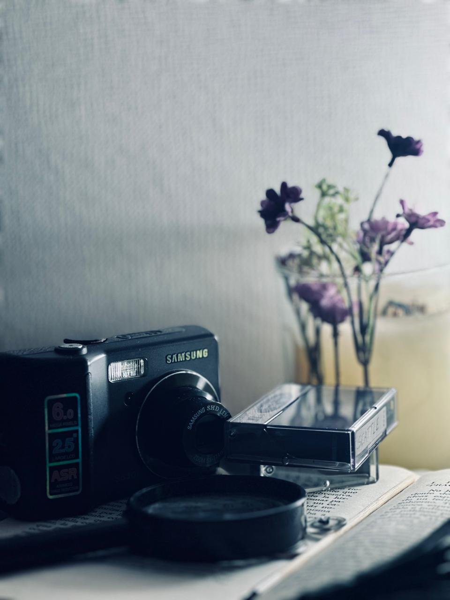
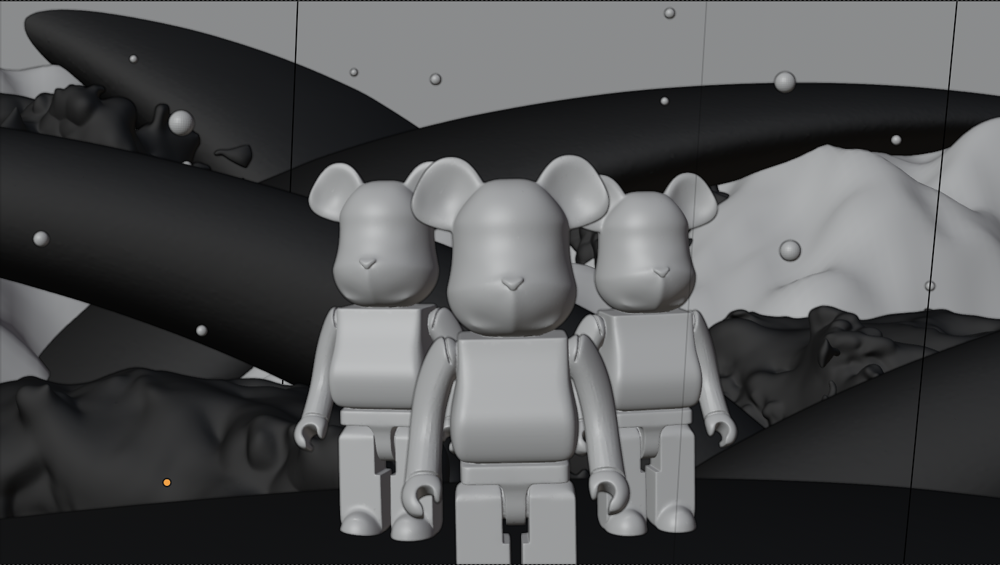
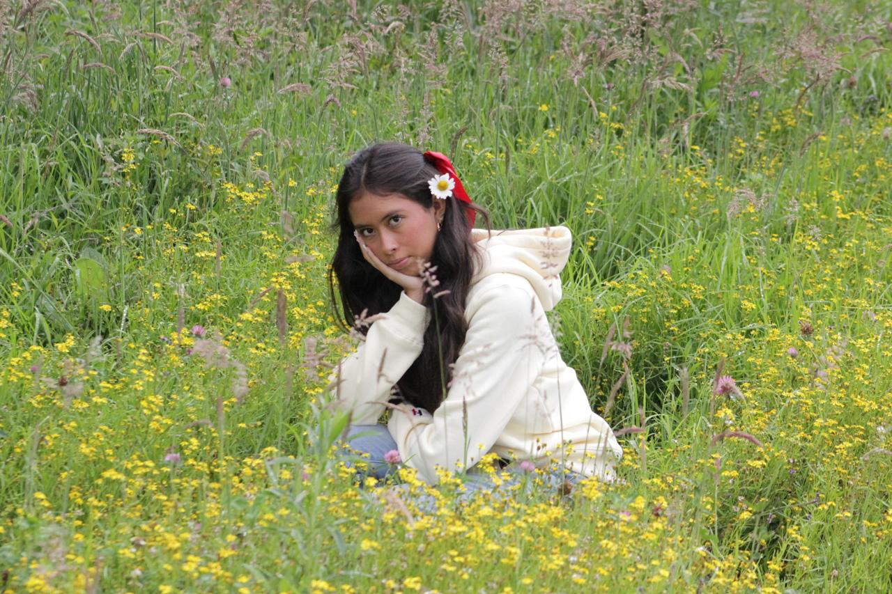
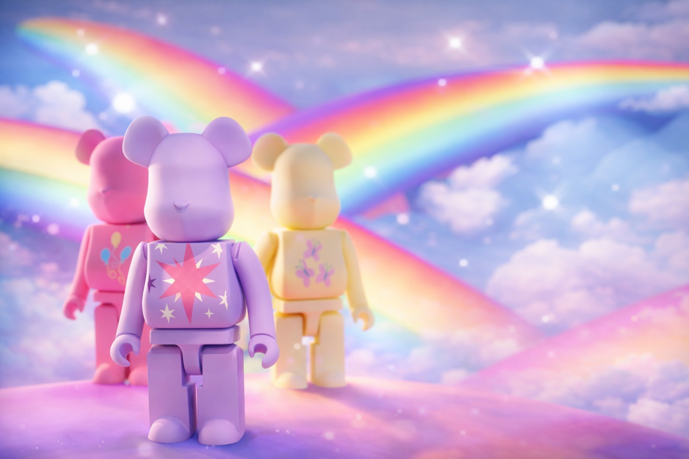

Se creó una escena 3D inspirada en My Little Pony para experimentar con
texturas aplicadas a un modelo tipo Bearbrick.
El objetivo era evocar el universo de los ponis sin representarlos de forma
explícita, utilizando como referencia principal el Cutie Mark característico
de cada personaje. Para reforzar el concepto fantástico se incorporaron
elementos como arcoíris y nubes. El resultado representa un mundo mágico
que alude al imaginario visual de la serie.
